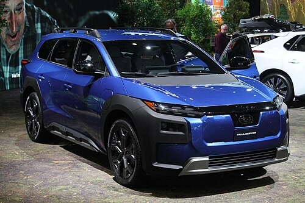

Back to main

Subaru Trailseeker — среднеразмерный электромобиль-SUV производства японской компании Subaru.
Subaru Trailseeker дебютировал 16 апреля 2025 года. Представляет собой крупногабаритную версию Solterra. Автомобиль оснащается аккумулятором ёмкостью 75 кВт⋅ч и двумя электродвигателями суммарной мощностью 280 кВт (375 л. с.). Компоновка полноприводная (AWD). Клиренс составляет 210 мм, а буксировочная способность — 1590 кг. До 100 км/ч автомобиль разгоняется за 4,3 секунды.
Запас хода Subaru Trailseeker составляет 420 км, что немного меньше, чем у Solterra(459 км). Стандартный зарядный порт NACS позволяет подзаряжаться на станциях Tesla Supercharger, а максимальная мощность зарядки постоянным током составляет 150 кВт.
Trailseeker, по сути, представляет собой электрическую версию Outback.